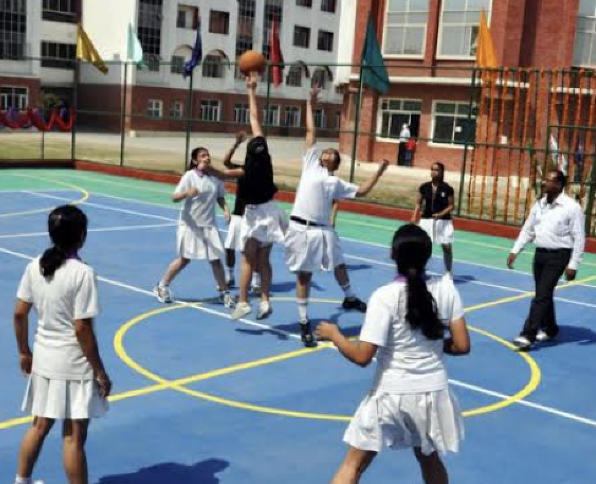
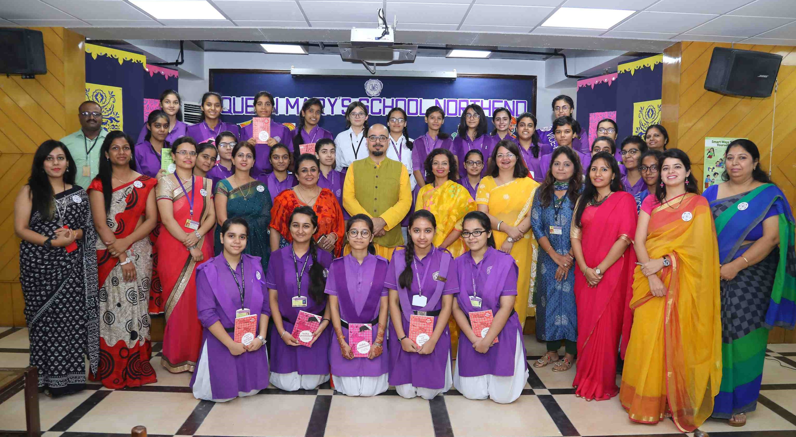
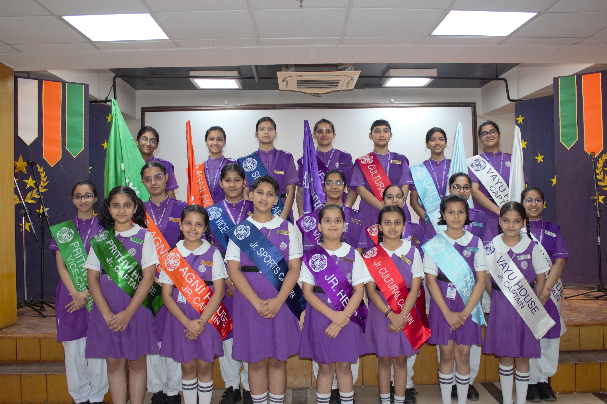
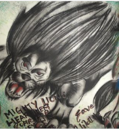

[A minority institution run by the Helen Jerwood Education Society of the Diocese of Delhi, Church of North India]
MODEL TOWN-III, DELHI-110009
BY LOVE SERVE ONE ANOTHER

HOME ABOUT US SCHOOL INFO CO-CURRICULAR CONTACT US
[A minority institution run by the Helen Jerwood Education Society of the Diocese of Delhi, Church of North India] MODEL TOWN-III, DELHI-110009 BY LOVE SERVE ONE ANOTHER |
|
|
|
HOME ABOUT US SCHOOL INFO CO-CURRICULAR CONTACT US | ||



|
THEATRE Theatre has been an influential factor in many people’s lives. Creativity can flourish, academics can improve and means of self expression can be developed. “The creative process of theatre leads children to be more open minded and acceptable because of the diverse roles they portray.” MUSIC AND DANCE At Queen Mary’s School, Northend, we try to bring in that enthusiasm and zeal in the students so that they enjoy this art and the interest is enhanced as they participate in various events held at school and outside and win them appreciation and various awards. SPORTS AND TAEKWONDO Sports and Taekwondo builds confidence, helps your health, provides you with self-defense and instills discipline. Altogether, these advantages provide a compelling argument for taking up taekwondo. Also there are a lot of opportunities when you join this sport supported by International Taekwon-Do Federation. ART/CRAFT Learning about art gives students a window into the rich and interesting world around them. The first form of creative expression is also through art like scribbling. The development of these skills not only makes students’ better learners but it also helps students feel good about themselves – it builds self esteem. COMPUTERS Computer Science is the accumulated knowledge through scientific methodology by computation or by the use of the computer. So, to make our students aware of the latest technological developments in the field of computer science and to make them techno-savvy, we at Queen Mary’s Northend are striving hard to provide them the best available in industry. LIBRARY Come let us read.... Books are keys to wisdom’s treasure, Books are gates to lands of pleasure. Our library serves as a treasure trove of knowledge offering students and staff a place to learn and explore. The repository houses a collection of over 13000 volumes with the number increasing with each passing day. THIRD LANGUAGE French language provides an introduction to the culture, literature and history of France. As our children explore the language, its grammar, alphabet and pronunciation they find it very interesting and poetic. Students learning French language demonstrate a superior level of mental flexibility, which is an ability to think more independently of words and higher awareness of concepts. |



|